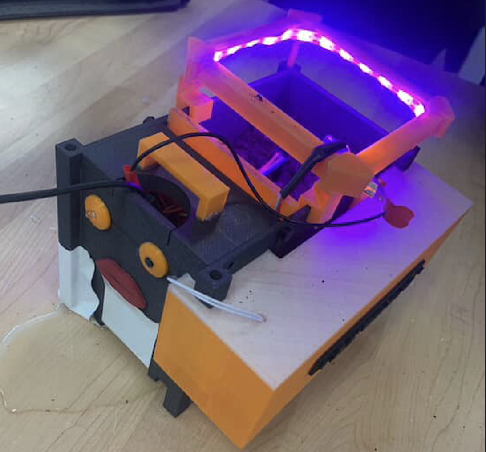
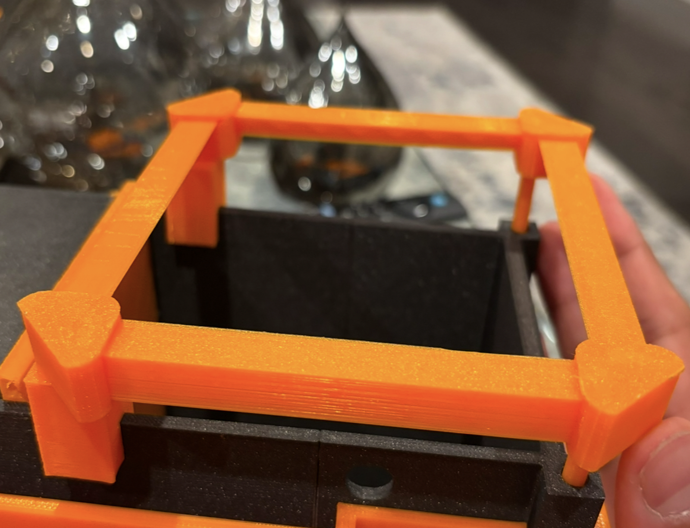
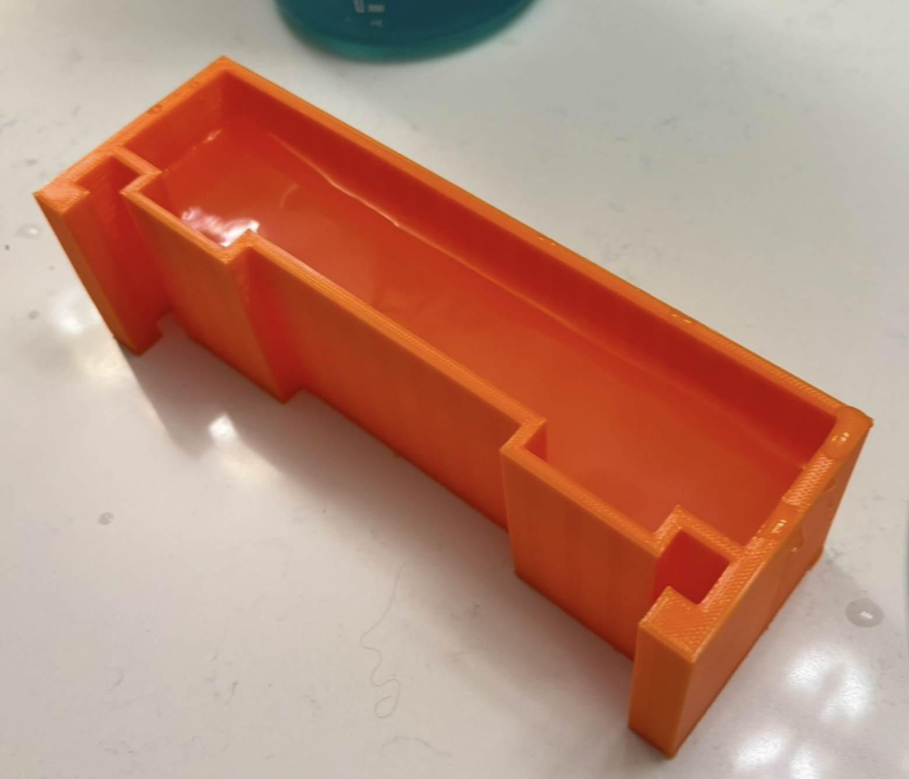
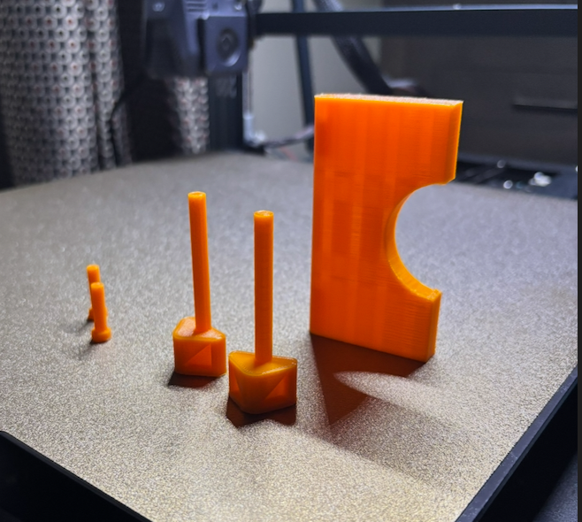
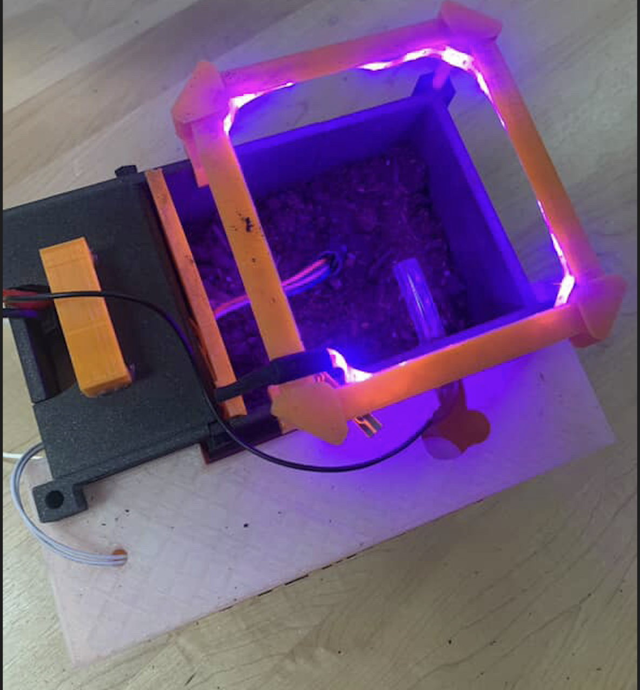

A microcontroller-based irrigation system that monitors soil moisture and automatically waters plants when levels drop below a set threshold.





The Automatic Garden Box was designed as an embedded systems project that combines sensing, automation, and physical prototyping. The system continuously monitors soil moisture and activates watering when the soil becomes too dry, creating a more reliable and self-sustaining plant care setup.
This project involved integrating a moisture sensor, programming the control logic, and building the overall physical system so that the electronics and structure worked together effectively. Reliability and simplicity were important design goals, since the system needed to perform autonomously over time.
Through this build, I gained stronger experience in sensor-based programming, control logic, and practical hardware assembly. It also gave me a chance to apply engineering design to an everyday problem in a way that was both functional and user-focused.